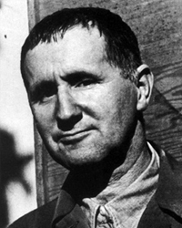

Бертольт Брехт
Роки життя: 1898−1956
Читати:
«Життя Галілея» (скорочено)
Син директора фабрики з виробництва паперу, Брехт після закінчення гімназії в Ауґсбурзі з 1917 р. студіював літературу та філософію, а згодом медицину в Мюнхенському університеті. У 1918 р. був мобілізований до армії, служив санітаром в одному зі шпиталів в Ауґсбурзі. Тоді ж його обрали членом солдатської ради. У 1919—1923 pp. поновив навчання в Мюнхенському університеті. У 1922р. його п'єса «Барабани серед ночі» («Trommeln in der Nacht») була відзначена Клейстівською премією. Про початок свого творчого шляху сам Брехт так розповів у листі до відомого німецького критика Герберта Ієренга: «В народній школі я пронудився чотири роки. Під час моєї дев'ятилітньої консервації в одній із ауґсбурзьких реальних гімназій мені не поталанило ні на йоту просвітити моїх вчителів. Вони невтомно твердили про мою схильність до ледарства та незалежності. В університеті я слухав курс медицини і навчався грати на гітарі... Під час революції я був медиком і працював у шпиталі. Потім написав декілька п'єс і навесні нинішнього року через недоїдання потрапив у лікарню... Після двадцяти чотирьох років перебування на світі Божому я дещо схуд».
Брехт зажив популярності спочатку як поет. У 1918 р. він написав «Баладу про мертвого солдата», яку особисто виконував у політичних кабаре, акомпануючи собі на гітарі. Брехт наприкінці війни почув похмурий жарт: «Тепер вже для військової служби мерців викопують». Цей гіркий дотеп Брехта перетворив у сюжет балади, в якій йшлося про те, як комісія лікарів визнала придатним до служби покійника, якому не страшно буде померти вдруге. Під грім труб і литавр солдат знову йшов у бій.
Перша п'єса Брехта має назву фінікійського божка — «Ваал» («Baal», 1922). Це ім'я дано герою-поету, який деякими своїми рисами схожий на Артюра Рембо. Поміж людей буржуазного кола, чиє існування суворо регламентоване, Ваал — вільна людина. Він — блукалець, який зневажає закони цивілізації. Ваал наділений великим талантом, але його мистецтво агресивне щодо всього людства. Близький до Ваала й герой п'єси «Барабани серед ночі» — Андреас Краглер. Після чотирирічного перебування на фронті він повернувся додому, в Німеччину, і потрапив на весілля своєї нареченої. П'єса була злободенною своїми життєвими колізіями. Колишньому фронтовикові Краґлеру належало зробити вибір: стати анархістом, революціонером чи власником. Краглер з цинізмом, притаманним раннім брехтівським персонажам, вибрав сімейний затишок і двоспальне ліжко.
У 1924 р. Брехт переселився у Берлін, з 1926 р. працював на посаді драматурга в Німецькому театрі Макса Рейнгардта. У 1926-1927 pp. він ґрунтовно вивчав діалектичний матеріалізм, виступав з лекціями в марксистській робітничій школі.
Швейцарський драматург М. Фріш, який зустрічався з Брехтом. після Другої світової війни, так оцінив вплив марксизму у процесі формування творчого образу німецького письменника: «Зараз навіть важко уявити собі Брехта без марксистської доктрини, яка справила вирішальний вплив на визволення його від ідей анархізму і допомогла зберегти талант художника від сповзання в болото нонконформізму». Дійсно, протест проти традиційного буржуазного життєвого укладу має у перших п'єсах нігілістичний характер.
У 1928 р. Брехт одружився з видатною німецькою актрисою Єленою Вайгель, яка згодом стала виконавицею головних жіночих ролей у брехтівському репертуарі.
У цьому ж році була написана і поставлена в Берлінському театрі на Шіффбауердамм п'єса «Тригрошова опера» («Die Dreigroschenoper»), яка принесла тріумфальний успіх авторові на сценах усього світу. Брехт скористався сюжетом «Опери жебраків» англійського драматурга Джона Гея, написаної двісті років тому. Дж. Гей пародіював опери Г. Ф. Генделя. Брехт переробив «Оперу жебраків», перенісши дію у вікторіанську Англію і змінивши трактування характерів головних персонажів. Успіх постановки багато з чому був зумовлений талановитою музикою Курта Вейля.
Персонажі Брехта видаються дивними. Кожна дійова особа, з'являючись на сцені, намагається перш за все здивувати і вразити глядача несподіваним вчинком, дотепним слівцем і парадоксом, а згодом — піснею-зонґом, зверненою до залу. Брехт виводить на оперні підмостки мешканців лондонського дна — грабіжників, жебраків і повій аж ніяк не для того, щоб глядач бідкався з приводу їхнього сумного становища. Покидьки у Брехта такі ж ділки, як і представники лондонского Сіті. У них існують свої фірми, процвітає свій бізнес. Жебрацтво — така сама професія, як гра на біржі. Поставивши знак рівності між злочинним і респектабельним світом, автор створив подвійну пародію, скомпрометувавши антагоністів буржуазного суспільства. У попередників Брехта знедолені та пригноблені виступали втіленням моральної чистоти. Для Брехта це радше виняток. В аморальному суспільстві, стверджував Брехт, розвивається інстинкт пристосовництва, який змушує забути про мораль.
Моральність наперед зумовлена матеріальними факторами. Драматург висунув лозунг, який шокував публіку: «Спочатку жертва, а моральність потім!» Брехт — матеріаліст гуманний: він уважав, що не можна ставити перед людиною непомірні моральні вимоги, не створивши для кожного стерпні умови існування.
З середини 20-х років аж до останніх днів Брехт плекав і розробляв теорію «епічного театру», присвячуючи цій проблемі статті, виступи, трактати: «Про оперу» («Uber Орег», 1930), «Про експериментальний театр» («Uber experi-mentelles Theater», 1939), «Малий органон для театру» («Kleines Organon fur das Theater», 1949), «Діалектика до театру» («Dialektik auf dem Theater», 1953).
«Епічний театр» протиставлявся традиційному, як висловлювався Брехт, арістотелівському, театру і містив у собі, загалом, ремесло драматурга, акторську техніку та режисерську методику. Брехт підмінював традиційну драматичну дію розповіддю. З цією метою він часто брав та інсценізував уже відомі твори: К. Марло «Життя Едуарда II Англійського» («Leben Eduards des Zweiten von England», 1924), X. Вуолійокі «Пан Пунтілла та його слуга Матті» («Herr Punrila und sein Knecht Matti», 1940), Я. Гашек «Швейку Другій світовій війні» («Schweyk im zweiten Weltkrieg», 1943), Софокл «Антігона» (1947) та ін. Глядач у брехтівському театрі змушений був повсякчас пам'ятати, що він присутній на спектаклі, а не переноситься в уявний світ. Ілюзорність дійства руйнувалась умовністю декорацій, плакатами, постійними зверненнями виконавців до глядацького залу.
Глядач або читач, знайомлячись, як правило, з уже відомою йому історією, був здивований її незвичним трактуванням. Найважливіший принцип брехтівського мистецтва — «відчуження» або «відсторонення» («Verfremdung»). Знайомі життєві та літературні колізії постають в епічних п'єсах Брехта завжди в несподіваному ракурсі. Те, до чого глядач звик і на що майже не реагував, драматург подавав йому як щось чуже, дивне; на близьке глядач дивився мовби збоку. Це повинно було стимулювати думку глядача чи читача. Брехт своїми п'єсами не намагався викликати емоційного потрясіння, у фіналі п'єс відсутній катарсис. Брехтівський театр раціональний і звернений до розуму глядача. На спектаклях публіка не повинна співпереживати героям, кожен зобов'язаний за ходом п'єси співвідносити свої рішення та оцінки із вчинками героїв. В епічному театрі Брехт відводив значну роль автору. Драматург виступає оповідачем, який використовує сюжетні колізії як аргументи в дискусії з глядачем.
У період розробки теорії «епічного театру» вона сприймалася як критика традиційного реалістичного театру, хоча сьогодні справедливіше буде говорити про переакцентування всередині п'єси і спектаклю. На початку 30-х років Брехт у своїй драматургії прагнув до дидактики. Він повчав явно і відверто, не боячись повторювати та закріплювати революційне знання. Він створив п'єси, які назвав «навчальними». До них належить інсценізація роману М. Горького «Мати» («Die Mutter», 1932). Німецький драматург вільно повівся з горьківським текстом: події у Брехта відбуваються у Твері і доведені до 1917 р. Із твору зникло романтичне начало, зате посилилися логічні докази необхідності революційної зміни світу. У п'єсі «Мати» Брехт вперше навзамін асоціального бунтівника вивів на сцену професійного революціонера.
Ґрунтовно перелицювавши сюжет «Орлеанської діви» Ф. Шиллера, Брехт створив свою «Святу Йоанну різниць» («Die heilige Johanna der Schlachthofe», 1932), в якій драматург полемізував з релігійно-філантропською пропагандою. Чиказька проповіднице Иоанна Дарк намагається екстатичними виступами навернути робітників на шлях доброчесності, змусити їх забути про земну юдоль і вибачити своїм гнобителям, обіцяючи їм натомість райські насолоди. Б., пропагандист і агітатор, засудив героїню за заклики до всепрощення і класового миру.
П'ятнадцять років провели в еміграції Брехт і Є. Вайгель. У 1937 р. після фашистського путчу сім'я переїхала у Прагу, а через два тижні — у Відень. Улітку цього самого року вони знайшли притулок у Данії в письменниці Карін Міхаеліс на острові Туро, восени перебрались у сільце неподалік від міста Свендборґ, де прожили шість років. Навесні 1935 р. Брехт і Є. Вайгель відвідали Радянський Союз, зустрілися з письменниками та німецькими антифашистами. У 1937 р. у Парижі була поставлена п'єса Брехта «Гвинтівки Тереси Каррар», присвячена громадянській війні в Іспанії. Головну роль виконала Є. Вайгель. Вона ж грала цю роль у спектаклях, поставлених в Копенгагені і Вестеросі (Швеція). У цю країну вони переїхали в 1939 р.
Німеччині під владою фашизму були присвячені хронікальні драматичні сцени «Страх і злидні Третьої імперії» («Fmcht und Elend des III. Reiches», 1938), які також ставились у багатьох країнах світу німецькими акторами-емігрантами.
Навесні 1941 р. Брехт із сім'єю переїхав у Москву, потім вони відправились у Владивосток, звідки пароплавом — у США. Як і інші німецькі письменники, Брехт був зарахований до штату голлівудських сценаристів, проте фільми за його сценаріями практично не знімались. У 1947 р. Брехта викликали на допит у Комісію з розслідування антиамериканської діяльності. Це стало приводом до рішення покинути Америку. У 1947 р. він приїхав у Швейцарію, в жовтні 1948 р. повернувся в Німеччину. У Східному Берліні Брехт разом з Є. Вайгель створив знаменитий драматичний театр «Берлінер Ансамбль».
За п'ятнадцять років, проведених в еміграції, Брехт став поетом, прозаїком і драматургом світового масштабу. Зміст його ліричних поезій продиктований переживаннями добровільних вигнанців. «Ми країни міняли частіше, ніж черевики...» — такі невеселі роздуми поета. У віршах постійно лунають заклики до солідарності, до створення єдиного антифашистського фронту.
В еміграції Брехт заявив про себе як про романіста. У 1934 р. він перетворив п'єсу «Тригрошова опера» у «Тригрошовий роман» («Der Dreigroschenroman»). Зберігши основні сюжетні лінії, він посилив у романі розвінчувальну антибуржуазну спрямованість. Інтрига роману зводиться до боротьби двох ділків: Йонафана — Єремії Пічема, короля жебраків, і Мекхіта, власника великої мережі дешевих крамничок, де торгують дріб'язком. Для Брехта вони обидва — експлуататори. Один збагачується на жебрацтві, створивши корпорацію лондонських прошаків. Другий розпоряджається всіма злодіями британської столиці. Обидва шахраї називають себе підприємцями, не вбачаючи нічого поганого у своєму брудному промислі. У фіналі Пічем і Мекхіт помирились, через що їхня спільна справа лише виграла. Проте Брехт закінчив розповідь грізним попередженням: солдат Ф'юкумбі, скалічений під час англо-бурської війни, бачить у сні повстання народу, який нещадно і безжально розправився з дрібними і великим власниками. У перші роки еміграції Брехт продовжував вірити в очищувальну силу світової революції.
В історичному романі «Справи пана Юлія Цезаря» («Die Geschafte des Herrn Jylius Casar», 1938—1939) Брехт достовірно відтворив біографію римського імператора. Проте в розповіді чимало анахронізмів: Цезар користується послугами банкірів, бізнесменів, юнкерів. Брехт-романіст намагався надати образові Цезаря позачасового характеру, диктатор з минулого викликав асоціації з біснуватим фюрером. Історичними паралелізмами Брехт користувався і в драмах.
На момент вторгнення фашистів у Польщу Брехт закінчував хроніку Тридцятилітньої війни — «Матінка Кураж та її діти» («Mutter Courage und ihre Kinder», 1939). Окремі сюжетні мотиви драматург запозичив із повісті німецького письменника XVII ст. Г. Я. К. Ґріммельсгаузена «Детальний і дивовижний життєпис неприторенної дурисвітки та волоцюги Кураж» (1670).
Героїня п'єси — Анна Фірлінґ на прізвисько Кураж-маркітанка. Три десятки літ плентається за солдатами її фургон, в якому будь-який вояка може вибрати собі товар за смаком. Для відважної язикатої крамарки війна давно стала годувальницею. їй однаково, хто переможе в черговій битві: поляки чи шведи, католики чи протестанти. Усі вони — її покупці, і тільки. Але героїня п'єси — матір, і на війні вона втрачає своїх дорослих синів і німу дочку Катрін. Горе не зламало Кураж, вона продовжує вже на собі тягнути повіз. Брехт дорікали за те, що матір не прозріла і не прокляла війну. Автор відповідав, що йому важливо було, щоб глядач виявився далекогляднішим від героїні і зрозумів просту страшну істину: «Війною думає прожити — за це потрібно заплатити». Платою за війну стає людське життя.
П'єса «Добра людина із Сезуаня» («Dergute Mensch von Sezuan», 1939—1941) являє собою повчальну казку, яку розповів водонос Ван. Хоча місце подій позначене як китайська провінція Сезуань, автор у ремарці пояснює, що те може трапитись у будь-якому місці на земній кулі. Сюжет п'єси умовний і традиційний. Боги, зійшовши на землю, щоб відшукати добру людину, повсюди зустрічаються з егоїзмом. Лише проститутка Шен Де була до них доброю і гостинною. В нагороду боги дали їй понад тисячу срібних доларів. Шен Де кидає свою осоружну професію і стає власницею тютюнової крамнички. Вона добра, нікому не може відмовити в допомозі, і гроші незабаром зникають. Тоді з'являється злий брат Шой Де, який стягує з боржників гроші, створює тютюнову фабрику, де люди за копійки працюють від світанку до світанку. Читачеві зрозуміло, що добра Шен Де та її злий двійник Шой Де — одна і та сама особа. Основна думка п'єси виражена в одному і зонґів: «Добрі у нас в країні добрими не зостаються, порожні тарілки — і їдоки вже б'ються». У несправедливо влаштованому суспільстві, зважав Брехт, людина стає злою через інстинкт самозбереження. Брехт стверджував: «Мене не цікавлять скупі чесноти бідаків — мене цікавлять чесноти щасливих людей. А це можливо, якщо лише докорінно переробити світ».
Задум п'єси-хроніки «Кар'єра Артуро Уї, яку можна було спинити» («Der aufhaltsame Aufstieg des Arturo Ui», 1941) виник у Брехта в 1935 p. під час перших відвідин США. Хоча у п'єсі йшлося про чиказьких гангстерів, у ній легко проглядались основні події німецької та європейської історії: підпал рейхстагу, окупація Австрії та кар'єра фюрера, яку можна було зупинити.
Вершиною драматургії Брехта стала драма «Життя Галілея»(«Leben des Galilei», перша редакція 1939, друга — 1946). Герой п'єси, великий учений Галілео Галілей, наляканий інквізицією, зрікається свого відкриття. Конфлікт драми міститься в діалозі Галілея та його учня Андреа Сарті. Учень звинувачує вчителя: «Пропаща та країна, у якій немає героїв». Учитель парирує: «Ні! Пропаща та країна, якій потрібні герої». Галілей-людина морально поступається Галілею-вченому. Відкриття Галілея, що перевернуло всю Сонячну систему, розкріпачило людську особистість, звільнивши людину з-під божественної опіки. Але свобода небезпечна, і першим це усвідомив сам Галілей. Великий мислитель, яким його зображує Б., користолюбний, хитрий, боягузливий. Але все це не принижує його як ученого. Рятуючи своє життя, він перепиняє дорогу істині, його відкриття стає недоступним для сучасників. Брехт не осуджує Галілея, мета п'єси в іншому: нагадати про відповідальність ученого за наслідки зроблених ним відкриттів. «Атомна бомба і як технічне, і як суспільне явище — кінцевий результат наукових досліджень і суспільної неспроможності Галілея», — говорив Брехт. Після атомного бомбардування Хіросіми і Нагасакі він переробив п'єсу, підкресливши моральну поразку видатного мислителя.
8 листопада 1949 р. відкрився новий театр «Берлінер Ансамбль» («Berliner Ensemble»), яким керував Брехт. Великий драматург мріяв про це все життя. Тут були поставлені п'єси, написані в еміграції, і нові драматичні твори, зокрема «Кавказьке крейдяне коло» («Der Kaukasische Kreidekreis», 1945; друга редакція 1953— 1954). В основу сюжету покладена притча про суд царя Соломона, який наказав розрубати немовля навпіл і таким чином вирішити суперечку поміж двома жінками, хто з них є матір'ю дитини. Брехт місцем подій робить Грузію XIX століття; у суперечках про дитину правда на боці прийомної матері Груше, юної дівчини, яка врятувала дитину під час війни, а не справжньої матері, якій син потрібен, щоб отримати спадщину. Колоритним є образ судді Аздака, який уособлює здоровий народний глузд і справедливість.
У травні 1955 р. Брехт приїхав у Москву для отримання присудженої йому Міжнародної Ленінської премії «За зміцнення миру поміж народами». У травні 1957 р. відбулися гастролі «Берлінер Ансамблю» у Москві та Ленінграді (тепер Санкт-Петербург). Спектаклі пройшли з успіхом і стали стимулом до постановок п'єс в нашій країні та видання творів Брехта. Зокрема у 60—80-х pp. в Україні було поставлено спектаклі «Матінка Кураж та її діти» (Чернівці), «Тригрошоваопера»(Харків, Одеса), «Кавказьке крейдяне коло» (Вінниця), «Кар'єра Артуро Уі» (Київ). Українською мовою твори Брехта перекладали В. Митрофанов, Ю. Лісняк, Н. Гордієнко-Андріанова, М. Зісман, Л. Череватенко, В. Коптілов, В. Стус («Життя Галілея») та ін.